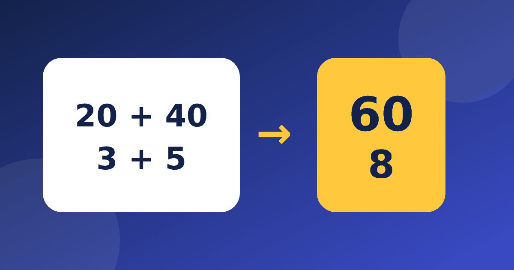

Из чего состоит число: как научить ребёнка видеть разряды

Почти каждый приём устного счёта опирается на одно умение: видеть в числе десятки и единицы. Ребёнок, который понимает, что 47 — это четыре десятка и семь единиц, спокойно складывает и вычитает двузначные числа. Тот, кто воспринимает 47 как один неделимый «ярлык», вынужден заучивать каждый пример отдельно. Разберём, как объяснить эту основу, какие игры помогут и как перейти от двузначных чисел к трёхзначным.
Что ребёнку нужно понять сначала
Позиция цифры в записи числа определяет её значение. В числе 47 цифра 4 стоит на втором месте и означает сорок, а цифра 7 стоит на первом и означает семь. В числе 74 те же цифры, но значение другое. Эту разницу полезно показать на пальцах и предметах: четыре пачки по десять карандашей и семь отдельных карандашей — это и есть 47.
Если у ребёнка пока не получается, потренируйтесь на меньших числах. Хорошая отправная точка — материал про состав числа до 10.
Разряды числа для детей: простой словарь
Слово «разряд» можно ввести мягко. Скажите: это место, где стоит цифра. Первое место справа — единицы, второе — десятки, третье — сотни.
- В числе 352 три сотни, пять десятков и две единицы.
- В числе 134 одна сотня, три десятка и четыре единицы.
- В числе 308 три сотни, десятков нет, восемь единиц.
Последний пример особенно важен: ребёнку нужно понять, зачем в числе 308 стоит нуль. Он держит место для десятков, которых нет. Без него число превратилось бы в 38.
Разложение числа на разряды: тренируем в игре
Разложение числа на разряды — это запись вида 47 = 40 + 7 или 352 = 300 + 50 + 2. Превратите его в игру. Один игрок называет число, второй быстро раскладывает его. Можно меняться ролями и иногда нарочно ошибаться, чтобы ребёнок исправлял вас: детям это очень нравится.
Усложнение: назвать число по разложению. Например, 600 + 20 + 5 — это 625, а 900 + 3 — это 903. Так ребёнок заодно привыкает к нулям.
Как это помогает складывать и вычитать
Возьмём 36 + 25. Складываем отдельно десятки: 30 + 20 = 50. Затем единицы: 6 + 5 = 11. Остаётся соединить: 50 + 11 = 61. Ещё пример: 58 + 23. Десятки дают 50 + 20 = 70, единицы дают 8 + 3 = 11, итого 81.
Такой способ подходит и тем, кому трудно держать числа в голове: промежуточные результаты можно проговаривать вслух. Подробный пошаговый разбор есть в статье сложение в уме 2 класс.
Для вычитания без перехода всё ещё проще. Возьмём 74 − 31. Десятки: 70 − 30 = 40. Единицы: 4 − 1 = 3. Складываем результаты и получаем 43.
Если единиц не хватает, например в 52 − 27, нужно вычитать по частям: 52 − 20 = 32, затем 32 − 7 = 25. Этот способ мы подробно описали в статье вычитание по частям.
Частые трудности
У детей обычно возникают три затруднения. Первое связано с нулём: число 205 читают как 25, потому что не видят пустого разряда. Покажите разложение 200 + 5 и спросите, сколько здесь десятков. Ответ «ни одного» станет понятным.
Второе — перестановка цифр. Ребёнок записывает 47 вместо 74, когда слышит число на слух. Помогает привычка сначала называть десятки, а потом единицы: «сорок и семь».
Третье — перенос при сложении, когда единиц получается больше девяти. Возьмём 47 + 38. Десятки дают 40 + 30 = 70, единицы дают 7 + 8 = 15, а вместе 70 + 15 = 85. Ребёнок должен увидеть, что пятнадцать — это один десяток и пять единиц.
В вычитании похожая трудность встречается, когда в единицах уменьшаемого меньше, чем в вычитаемом. Например, в 83 − 35 не получится вычесть пять из трёх. Тогда поступаем так: сначала 83 − 30 = 53, затем 53 − 5 = 48.
Полезно и обратное задание. Назовите число и попросите сказать, сколько в нём десятков и сколько единиц. В 91 девять десятков и одна единица, в 60 шесть десятков и ноль единиц, в 85 восемь десятков и пять единиц. Через несколько дней можно добавить вопрос «а что будет, если прибавить один десяток?». К 47 получится 57, а к 91 получится 101.
Что делать дальше
Закрепляйте тему короткими занятиями. Три-четыре примера в день полезнее длинной сессии, после которой ребёнок устаёт. Хорошо работает и тренажёр Устный счёт: там есть модули на сложение и вычитание, а бесплатно открыт модуль «Состав числа».
Если в процессе ребёнок часто ошибается в таблице умножения, посмотрите материал ошибки родителей при изучении таблицы умножения: некоторые советы подойдут и для устного счёта.